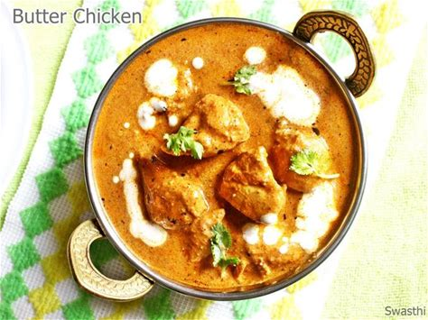
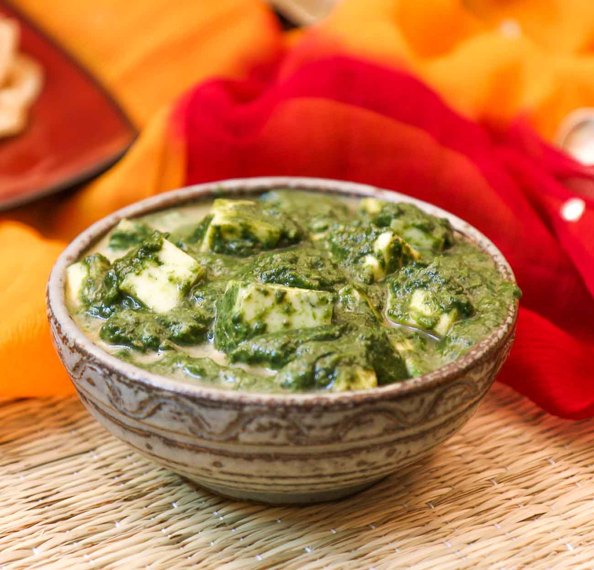

FAVORITE FOOD
INTRODUCTION
India is a land of diverse cultures, and this diversity is beautifully reflected in its cuisine. The array of flavors, ingredients, and cooking techniques
found across the country is vast and varied, offering something for every palate. Whether it’s the rich and creamy gravies of the North, the spicy and tangy
dishes from the South, or the vibrant street food of the West, Indian food is a celebration of taste and tradition. Among the multitude of dishes, a few stand
out as favorites that not only satisfy the hunger but also comfort the soul. In this essay, we'll explore some of these beloved Indian dishes, each with its
unique story and flavor profile that make them
LIST OF FOODS
- Butter Chicken (Murgh Makhani) - A rich and creamy tomato-based curry with marinated chicken.
- Palak Paneer - A spinach and cottage cheese dish cooked with spices.
- Chole Bhature - Spicy chickpea curry served with deep-fried bread.
- Dosa - A thin, crispy pancake made from fermented rice and lentil batter, often served with sambar and chutney.
- Hyderabadi Biryani - A fragrant and flavorful rice dish
BUTTER CHICKEN :

| Ingredients |
Amount |
| boneless chicken, cut into cubes |
500g |
| 1 cup yogurt |
1Cup |
| tablespoon ginger-garlic paste |
1 Cup |
| teaspoon red chili powder |
1 Cup |
| 1 teaspoon garam masala |
1 Cup |
| cumin powder |
1 Cup |
| lemon juice |
1 Cup |
Butter Chicken, or Murgh Makhani, is one of India's most iconic dishes, celebrated for its rich, creamy texture and harmonious blend of spices. This dish has its origins in the kitchens of Delhi, where it was created by accident, as a way to use leftover tandoori chicken. Today, it has become a beloved comfort food across the globe. The preparation of Butter Chicken begins with marinating boneless chicken cubes in a blend of yogurt, ginger-garlic paste, and a mix of aromatic spices like red chili powder, turmeric, garam masala, cumin powder, and a hint of lemon juice. This marinade is crucial as it infuses the chicken with deep flavors, making every bite tender and flavorful. The marination process should ideally be done overnight to allow the chicken to absorb the spices fully, though an hour will suffice if time is short.Once the chicken is marinated, it's cooked in a hot pan until golden brown, creating a beautiful contrast of textures with the outside being slightly crisp and the inside juicy. The gravy is where Butter Chicken truly shines. Melted butter serves as the base, in which finely chopped onions are sautéed until they turn golden brown, adding a natural sweetness to the dish. Ginger-garlic paste is then added, followed by a rich tomato puree. The puree is seasoned with more red chili powder, turmeric, garam masala, and cumin powder, creating a sauce that is both spicy and slightly tangy. The secret to the sauce’s luxurious texture lies in the addition of a smooth cashew nut paste, which adds a creamy richness without overpowering the other flavors.
The cooked chicken is then added back into the pan, ensuring that every piece is well-coated in the sauce. To enhance the richness, fresh cream is stirred in, giving the sauce its signature velvety texture. A sprinkle of dried fenugreek leaves (kasuri methi) adds a subtle, earthy bitterness that balances the sweetness of the tomatoes and cream. The dish is then left to simmer on low heat for about 10-15 minutes, allowing the flavors to meld together perfectly.
Butter Chicken is traditionally served with naan, roti, or steamed rice, making it a versatile dish that can be enjoyed in various ways. The combination of the tender chicken, the rich, buttery sauce, and the aromatic spices makes every mouthful an experience in itself. Whether you're enjoying it as a special meal with family or as a highlight at a dinner party, Butter Chicken is sure to impress with its depth of flavor and comforting warmth.
Once the chicken is marinated, it's.
PALAK PANEER :

| Ingredients |
Amount |
| Fresh spinach leaves(palak) |
250g |
| Green chilli |
1 packed |
| Teaspoon ginger |
250gram |
| Garlic |
2 |
| Water |
1/2 Cup |
| Paneer |
200 gram |
| oil |
1 Tablespoon |
Blanch the Spinach:
Rinse the spinach leaves thoroughly under running water.
Boil water in a large pot and add a pinch of salt.
Add the spinach leaves and cook for 2-3 minutes until they wilt.
Immediately transfer the spinach to a bowl of ice-cold water to retain its green color.
Drain the spinach and blend it into a smooth puree along with green chili, ginger, and garlic. Set aside.
Prepare the Paneer:
If you prefer a slightly crispy texture, lightly fry the paneer cubes in a tablespoon of oil until golden brown. This step is optional.
If not frying, simply cube the paneer and set it aside.
Make the Gravy:
Heat oil or ghee in a pan over medium heat.
Add cumin seeds and let them splutter.
Add finely chopped onions and sauté until they turn golden brown.
Add chopped garlic and ginger-garlic paste, and cook until the raw smell disappears.
Add chopped tomatoes and cook until they become soft and the oil starts to separate from the mixture.
Stir in turmeric powder, red chili powder, and garam masala, cooking for another minute.
Combine Spinach Puree and Paneer:
Add the spinach puree to the gravy and mix well.
Add a little water if the mixture is too thick and stir to combine.
Bring the mixture to a gentle simmer and cook for 5-7 minutes.
Add the paneer cubes and mix well, ensuring the paneer is coated with the spinach gravy.
If using, add fresh cream or yogurt for extra creaminess and stir gently.
Simmer and Serve:
Let the Palak Paneer simmer for another 2-3 minutes to allow the flavors to meld together.
Garnish with a drizzle of fresh cream and chopped coriander leaves.
Serving Suggestion:
Serve Palak Paneer hot with naan, roti, or steamed rice. This dish is not only delicious but also packed with the nutritious goodness of spinach and protein-rich paneer, making it a wholesome and satisfying meal.